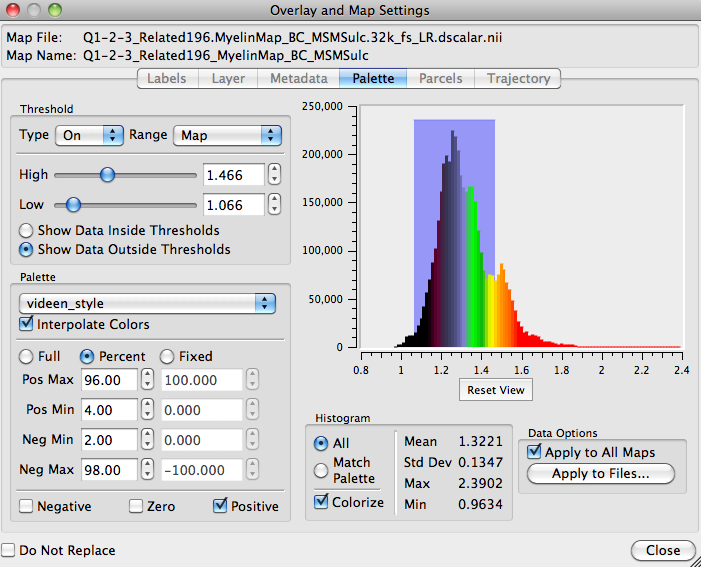

Overlay and Map Settings
Overlay and Map Settings sets display options for layer
data selected in the Overlay Toolbox Layers
tab.
- To open these settings, click the
 button for a selected layer.
The Do Not
Replace option at the bottom of the box allows more
than one Settings box to be open at a time. Otherwise, if
settings for another layer is selected the contents of the
box will switch to options for that most recently selected
layer.
button for a selected layer.
The Do Not
Replace option at the bottom of the box allows more
than one Settings box to be open at a time. Otherwise, if
settings for another layer is selected the contents of the
box will switch to options for that most recently selected
layer.
- The box contains
tabs with options for different types of Layers data:
Labels, Layer (volume layer settings), Metadata, Palette,
Parcels, Trajectory. Tabs will be active (not
grayed-out), depending on the data in the File selected for
that layer.
- Labels contains an Edit
button that opens an Edit Labels box for modifying the color
and name of labels in a *.label or *.dlabel file. Edits
are applied when the Apply or OK buttons are clicked. The
edits are not saved to the label file until selected in Save/Manage
Files.
- Layer contains voxel drawing
settings for files containing volume data. The 3D options to
draw voxels as cubes or rounded cubes are only active in All
view. These options should only be used for files with a
limited number of voxels to draw (*.dscalar files that
contain only subcortical voxels, low resolution volumes, or
highly thresholded higher resolution volumes) because wb_view
attempts to draw all voxels in the volume, causing the program
to hang when
large numbers of voxels are drawn.
- Metadata will allow
creation/editing of map metadata for each layer file. This
option is not active currently.
- Palette (see image) contains
settings for adjusting the type and range of the data color
palette, setting thresholds on displayed data, and shows a
histogram/basic statistics on the data distribution.
- Thresholds set by the sliders or
entered values in the toggle box are shown by the shading in
the histogram and can be applied inside or outside the set
values.
- Palette spectrum is set for the
Full range of the map data, a Percent range
of the full data, or a Fixed range of the full data values.
Positive, zero, or negative values may be toggled on/off for
display with the checkboxes.
- Mouse controls for
zooming and panning are active in the histogram chart field.
- Data Options
allow a palette setting to be applied to all maps in a data
file and/or to multiple data files.
- Parcels sets
the mode and color for which an identified parcel is
indicated on the surface. Color Mode: Outline
indicates the selected parcel's boundary with a highlight
color, Fill shows the entire selected parcel with
the highlight color, and Off turns off the parcel
indication altogether.
- Trajectory
sets Attributes, Display Mode, and Data Mapping for display
of tractography trajectory files. This tab is currently
inactive pending the release of tractography data.
